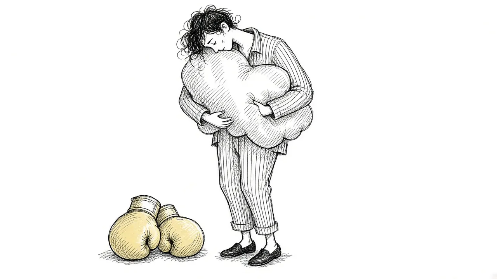

Beyond Fighting Grief: Why Leaning In Helps

When grief arrives, the natural instinct is to fight it. Push the feelings down. Stay busy. Change the subject. Try not to think about them. Many of us were taught that strong people keep it together, and that the best way through pain is to get rid of it as fast as possible.
But grief rarely responds well to being fought. The harder you push, the harder it tends to push back. This guide explores why leaning in, gently and at your own pace, often helps grief move in ways that fighting cannot.
The urge to fight
Fighting grief can take many forms. You might recognize some of these:
- Keeping busy from morning until night so there is no time to feel.
- Avoiding photos, places, songs, or conversations that bring up the loss.
- Telling yourself to stop crying or "get it together."
- Drinking, scrolling, or working more to numb out.
- Refusing to talk about the person who died.
- Pretending to others, and yourself, that you are fine.
These responses make sense. Grief hurts, and humans are wired to avoid pain. In small doses, taking a break from grief can be healthy. The trouble starts when avoidance becomes the main way of coping.
Why fighting often backfires
When you try hard not to feel something, your mind often stays on guard for it. That watchfulness can actually keep the feeling close. A thought you are trying to avoid tends to pop up more often, not less.
Over time, fighting grief can lead to:
- Bigger waves. Feelings that are held back can burst out at unexpected times.
- Intrusive memories. Memories you push away may return more forcefully. Our guide to intrusive memories after a death explains why.
- A shrinking life. Avoiding reminders can mean avoiding places, people, and activities you once loved.
- Exhaustion. Holding feelings at bay takes a lot of energy.
- Feeling stuck. Grief that is not allowed to move can stay raw for longer.
What you resist does not disappear. It waits, and it often grows louder.
What leaning in means
Leaning in does not mean drowning in grief or forcing yourself to feel pain all the time. It means allowing grief to be present when it arrives, rather than fighting it off.
Leaning in might look like:
- Letting yourself cry when you need to.
- Looking at a photo and noticing what you feel.
- Talking about the person, even if your voice shakes.
- Visiting a meaningful place, when you feel ready.
- Writing about your loss.
- Saying "I am grieving" out loud.
The key is willingness. You are choosing to let the feelings come, knowing they will rise and eventually pass. Our guide to willingness versus willpower in grief explores this idea further.
Why leaning in can help
When you allow grief, a few things tend to happen.
Feelings move through
Emotions often follow a natural arc. They rise, peak, and fall. When you let a wave of grief come, it often passes more quickly than you expect. Fighting it can keep it stuck at the peak for longer.
Fear loses its grip
Many grieving people are afraid that if they start crying, they will never stop. Leaning in, little by little, teaches you that you can feel intense grief and come out the other side. Over time, the feelings become less frightening.
Life gets bigger again
When you stop avoiding reminders, you may find yourself able to go back to places and activities you had given up. Our guide to facing the hard places explores this gently.
Connection grows
Leaning into grief often means leaning into memories. This can help you stay connected to the person who died in a way that feels warm rather than only painful.
Leaning in gently
Leaning into grief does not have to be dramatic or overwhelming. You get to choose how much and when. A few ideas:
- Start small. Look at one photo. Listen to one song. Notice what happens.
- Set a time. Some people find it helpful to set aside a short period each day to grieve on purpose. When the time ends, they gently turn to something else.
- Use your body. Place a hand on your heart, take slow breaths, or go for a walk while you let grief be present.
- Name what you feel. Saying "This is sadness" or "This is longing" can make big feelings feel more manageable.
- Have a way back. After leaning in, it helps to have something grounding to return to, like making tea or calling a friend.
Taking breaks is still okay
Leaning in does not mean you must face grief every moment. Healthy grieving includes breaks. Watching a funny show, working on a project, or spending time with friends without talking about the loss can all be part of coping.
The difference is intention. A break is a choice you make to rest. Avoidance is a pattern of never letting grief in. If you notice that you are always running from grief, that may be a sign to lean in a little more. Our guide to breaking the avoidance cycle offers more.
What gets in the way
Leaning in can feel hard for many reasons.
- Messages from others. You may have been told to be strong or that crying is weakness.
- Fear of being overwhelmed. It can feel safer to keep the lid on.
- Practical pressures. Work, kids, or caregiving may leave little room to feel.
- Trauma. If the death was traumatic, leaning in may bring up frightening images.
If leaning in feels unsafe or overwhelming, you do not have to do it alone. A grief counselor or therapist can help you approach your feelings at a pace that feels manageable. You can read more in our guide to grief counseling.
Leaning in with kindness
Leaning into grief works best when paired with self compassion. Instead of criticizing yourself for feeling sad, you can respond with care. You might say, "Of course I feel this way. I loved them." Our guide to self compassion in grief has gentle practices to try.
What leaning in sounded like for one person
Imagine someone who has avoided her mother's recipe box for a year. Every time she sees it on the shelf, her chest tightens and she looks away. One Sunday, she decides to take it down and read just one card. Her hands shake. She cries hard for several minutes. Then, slowly, she notices her mother's handwriting, the grease stain on the corner, the little note that says "double the garlic." She laughs.
She does not cook anything that day. But the next week she reads two cards, and the week after she makes the soup. The box is still hard to look at sometimes. It is also, now, a place where she can visit her mother. That is often what leaning in looks like: small, shaky, and surprisingly warm.
A different relationship with grief
Moving beyond fighting grief does not make the pain disappear. But it can change your relationship with it. Grief becomes less of an enemy and more of a companion. It shows up, you let it sit with you for a while, and then it moves on.
Over time, many people find that grief they allow becomes easier to carry than grief they fight. The love underneath it has room to breathe. And you have more energy for living, because you are no longer spending so much of it holding grief at bay.
This article is for general information and support. It is not medical or mental health advice. If grief has become unbearable or you are thinking about harming yourself, call or text 988 right now.
Related reading

Acceptance and Remembrance: Two Ideas That Shape Healthy Grief
How acceptance and remembrance work together to help people carry grief while staying connected to the person they lost.

Coping With Grief: A Practical Guide
Practical, everyday ways to cope with grief, from the first days through the months and years that follow.

Self-Compassion in Grief
Grieving people are often harsh with themselves. How self-compassion can ease guilt and help you carry loss.